"Una mujer está sentada sola en una casa. Sabe que no hay nadie más en el mundo:
todos los otros seres han muerto. Golpean a la puerta."
- Thomas Bailey Aldrich
01
¿Qué nos pidieron hacer?
Un microcuento, 5 personas y un resultado. Se nos pidió elegir un microcuento
de una lista, al elegir este, vimos la naturaleza del microcuento por lo
que naturalmente elegimos que se iba a ambientar en el terror. Una vez
escogido, el cliente nos pidió que usaramos un objeto real para darle un uso
en TouchDesigner, en este caso la puerta.
Nos dividimos los trabajos y yo estuve a cargo de crear
5 de 10 escenarios que den una impresión ominosa e incómoda.
La otra mitad lo iba a hacer una compañera del grupo, yo sin
embargo completé 4 escenarios debido a que hubo complicaciones
en la creación de algunos de estos, que veremos a continuación.
Moodboard
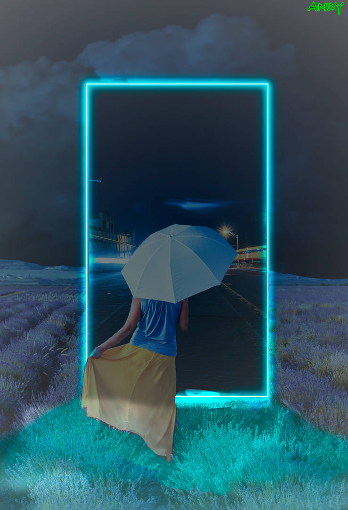
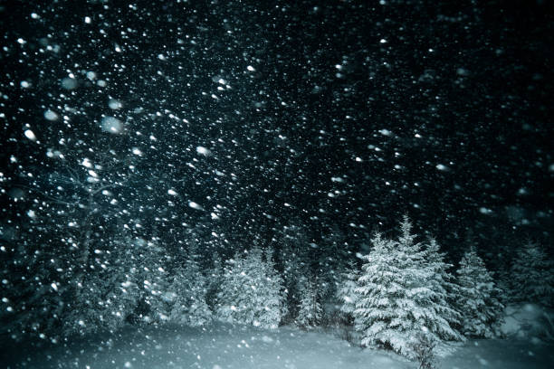
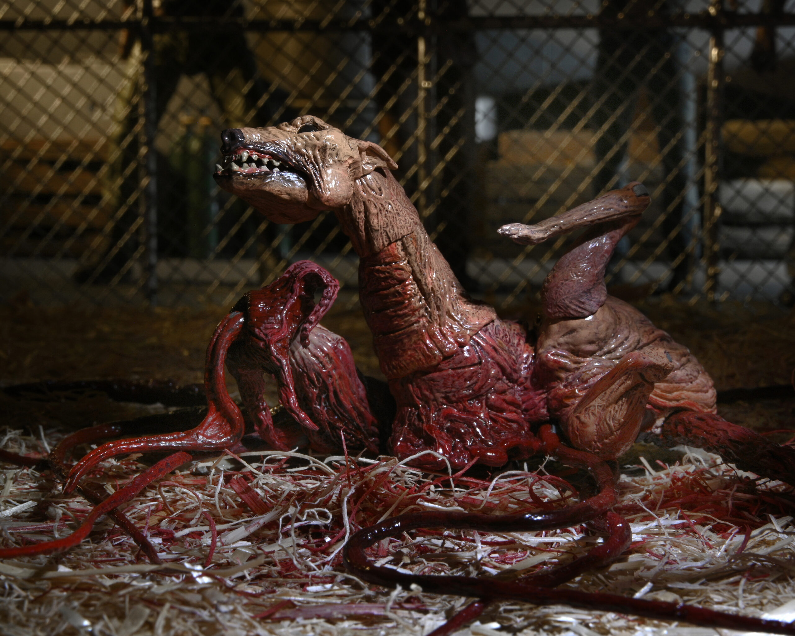
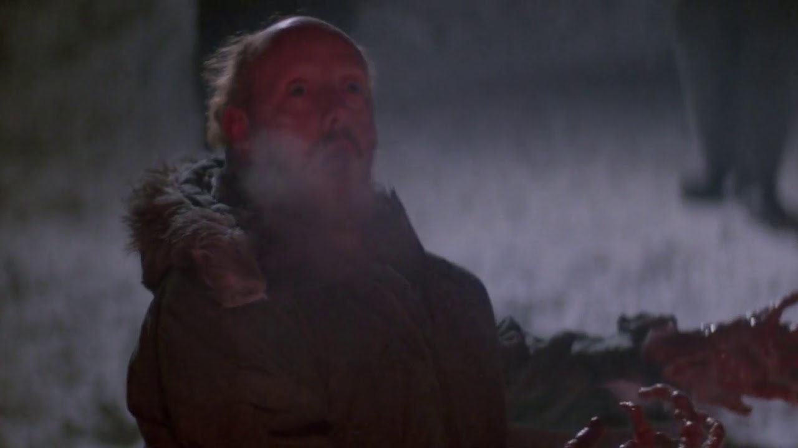
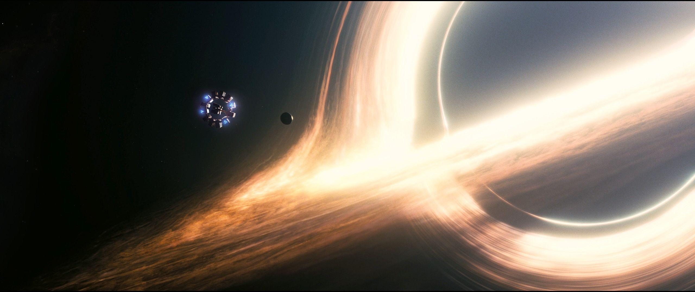
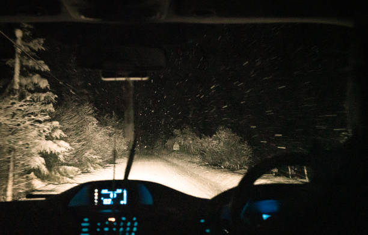
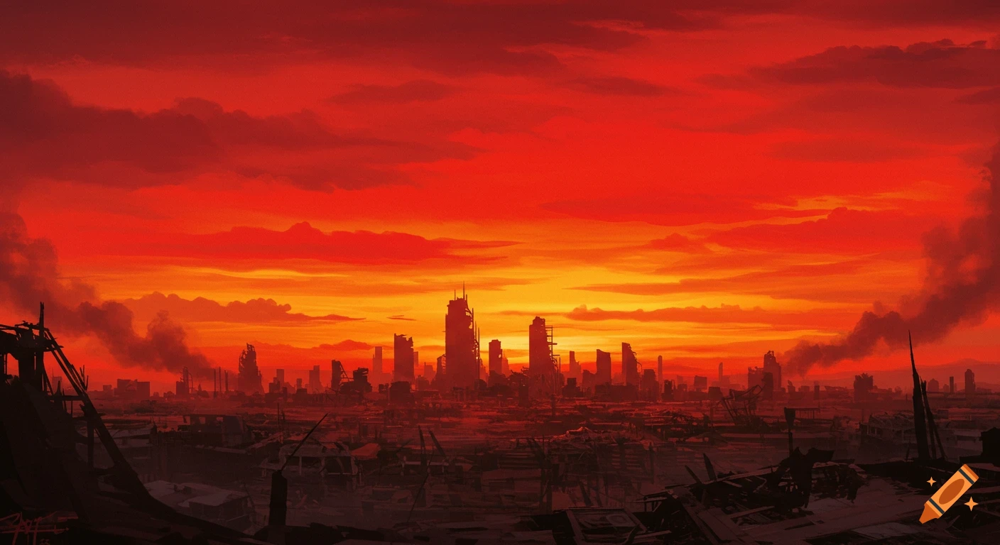
En el moodboard para mis escenarios principales y tomando en cuenta que
la puerta va a lucir casi como un portal que se rescata principalmente de
que se va a ver algo del otro lado. Hice en primer lugar elecciones simples, como
una tormenta de nieve y un agujero negro, que son piezas visuales más enfocados
en efectos con partículas y fuentes lumínicas. Sin embargo,
para las referencias restantes como 'La Cosa' y la ciudad destruída, iba
a usar ilustración digital y animación.
02
Bocetos y conceptos
Concepto 01
Tormenta de Nieve
Para crear este escenario, opté por crear un fondo completamente
oscuro con partículas blancas que simulen una fuerte nevada, pero para darle más
incomodidad, se me ocurrió darle destellos de luz como si cayese una rayo tal cual
como se puede ver en el segundo boceto. Hice la animación en After Effects usando solo
las partículas de "lluvia" y multipliqué dichas partículas para que parezca una
ventisca, sin embargo faltaba añadir el destello y los efectos de sonido.
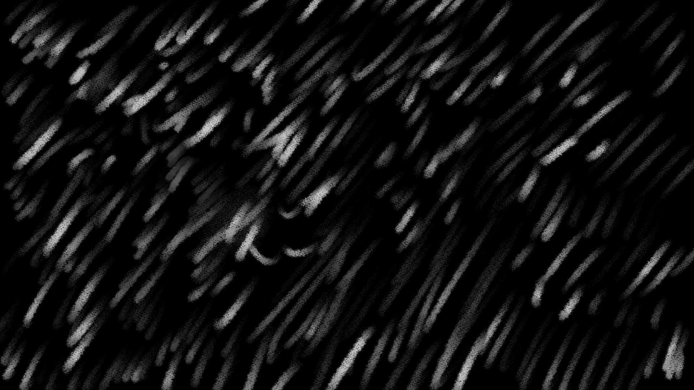
Primer boceto: fondo oscuro con partículas blancas de nevada.
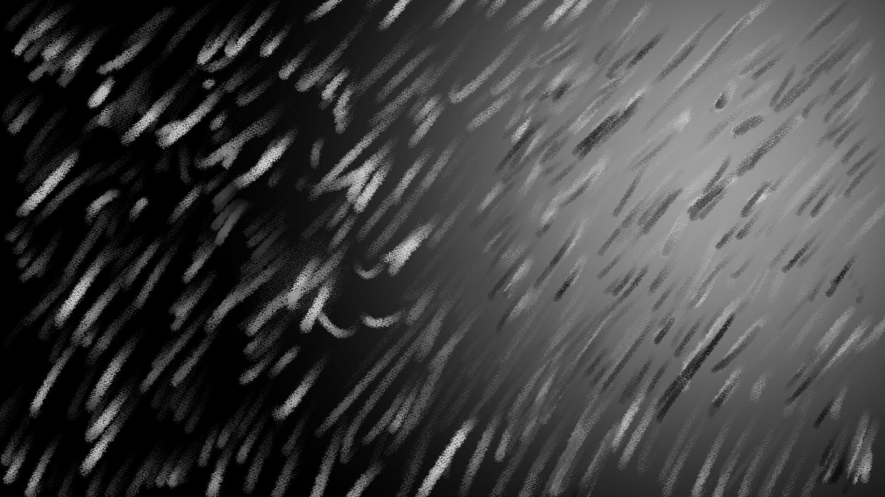
Segundo boceto: destellos de luz, como si cayera un rayo.
Animación en After Effects: ventisca hecha con partículas de lluvia multiplicadas.
Concepto 02
Agujero Negro
Desde el primer boceto tenía la intención de hacer
el agujero negro, más parecido al que hicieron en Interestelar. Hice un
boceto alternativo si bien el cual tiene más detalle, lo malo es que
no lucía como un agujero negro, ni siquiera de otro estilo, entonces
decidí optar por hacerlo lo más parecido a un agujero negro real, con
una pequeña estilización de por medio,
haciendo que este crezca y se dirija hacia la pantalla.
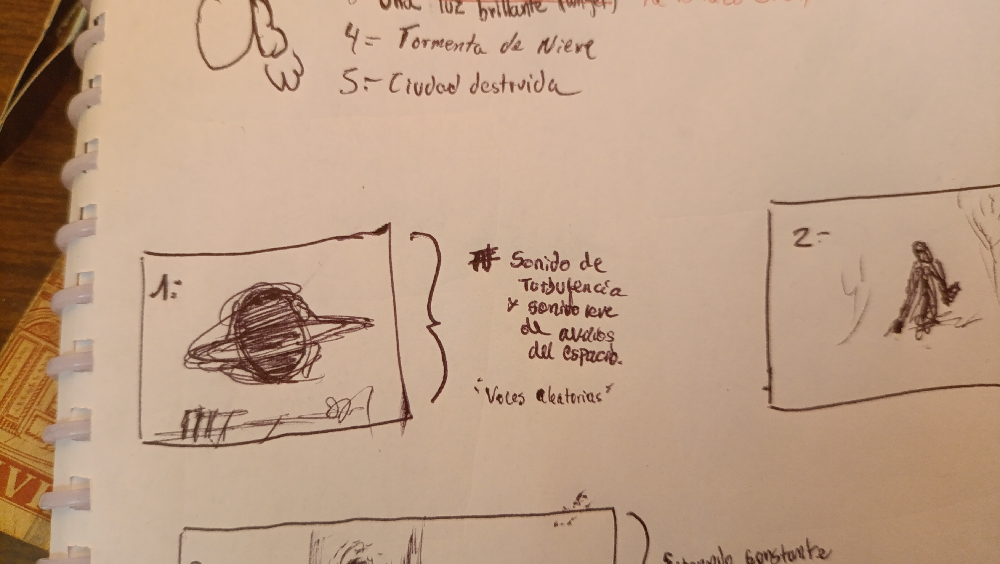
Boceto Inicial del agujero negro con opciones de
sonidos irían (turbulencia, voces, audios del espacio), finalmente descartados.
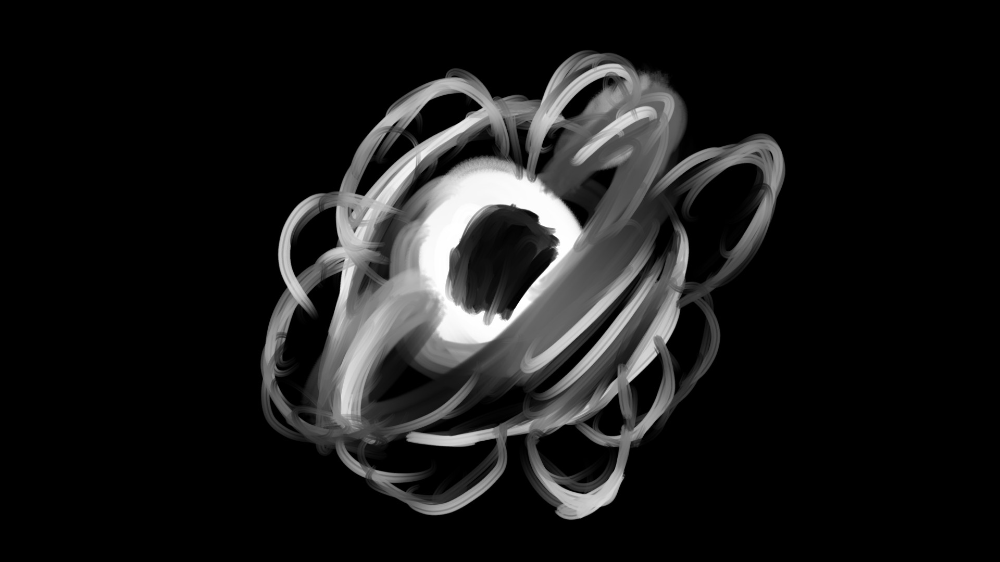
Segundo boceto del agujero negro, descartado
por tener más similitud a un púlsar que un agujero negro real.
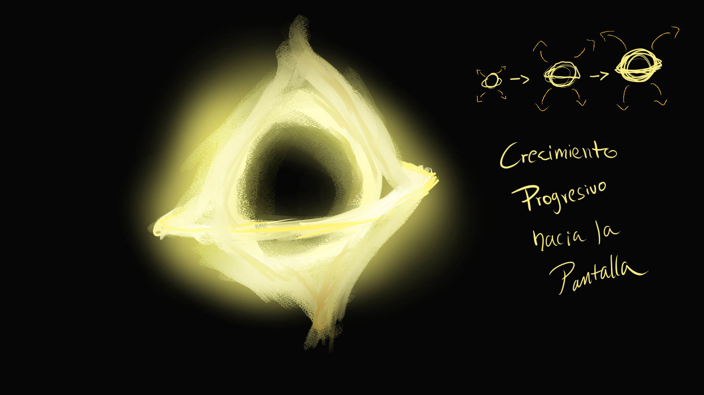
Boceto final de agujero negro, muy inspirado en
el agujero negro de Interestelar.
Concepto 03
Ciudad destruída
La idea de hacer una ciudad destruída, era
con el fín de darle un ambiente apocalíptico, como un cielo
rojo con edificios destruidos, que luzca que ya es un yermo, sin civilización por la
falta de calles. Se hizo un boceto e idea en papel, luego se ilustró en Clip Studio Paint
en PNG los modelos de los edificios y luego en Photoshop se añadió el fondo rojo
con el suelo que da la impresión de ser arena.
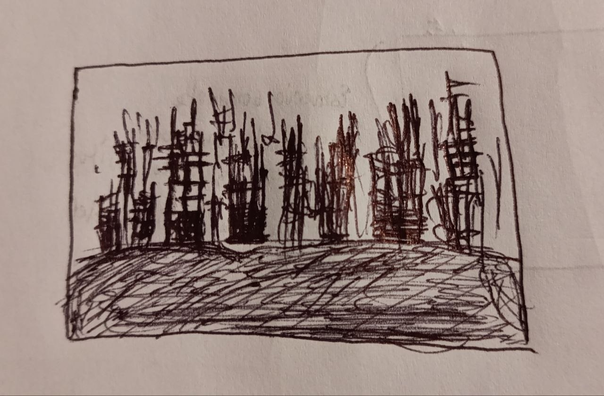
Boceto en papel.
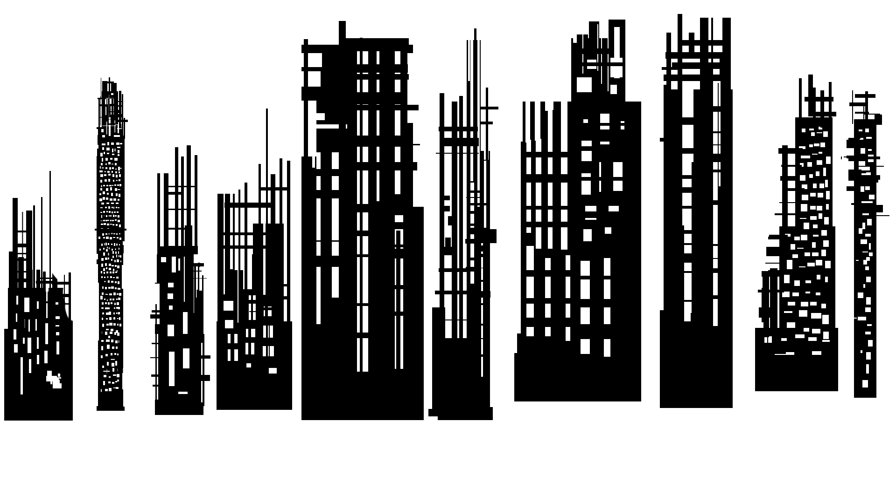
Dibujo de edificios destruídos en Clip Studio Paint.
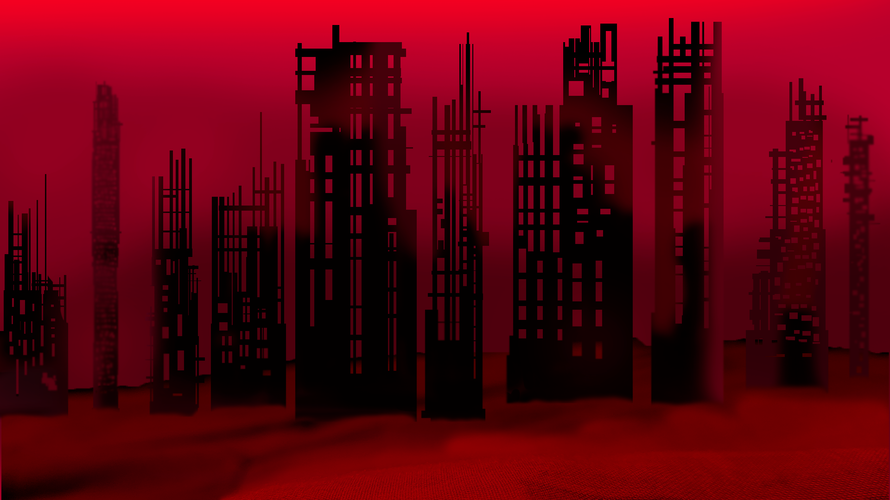
Filtros de color e iluminación, con un suelo
arenoso.
Concepto 04
El hombre rojo
Muy inspirado en 'La Cosa' hice el primer
boceto haciendo que la criatura esté de rodillas gritando al
espectador, si bien esta idea inicial me parecía muy bien en cuanto
a horror, opté por cambiar el horror misterioso a uno directo
y 'shockeante'. En el segundo boceto, decidí hacer que sea soleado y en una
pradera, para que sea más explícito y rompa un poco el cliché de
que siempre el monstruo esté en la oscuridad. Ya para la composición final
que todo lo dividí en capas y lo pasé a After Effects, hice la animación
de la cabeza y los tentáculos de la espalda, aún así faltaba el sonido.
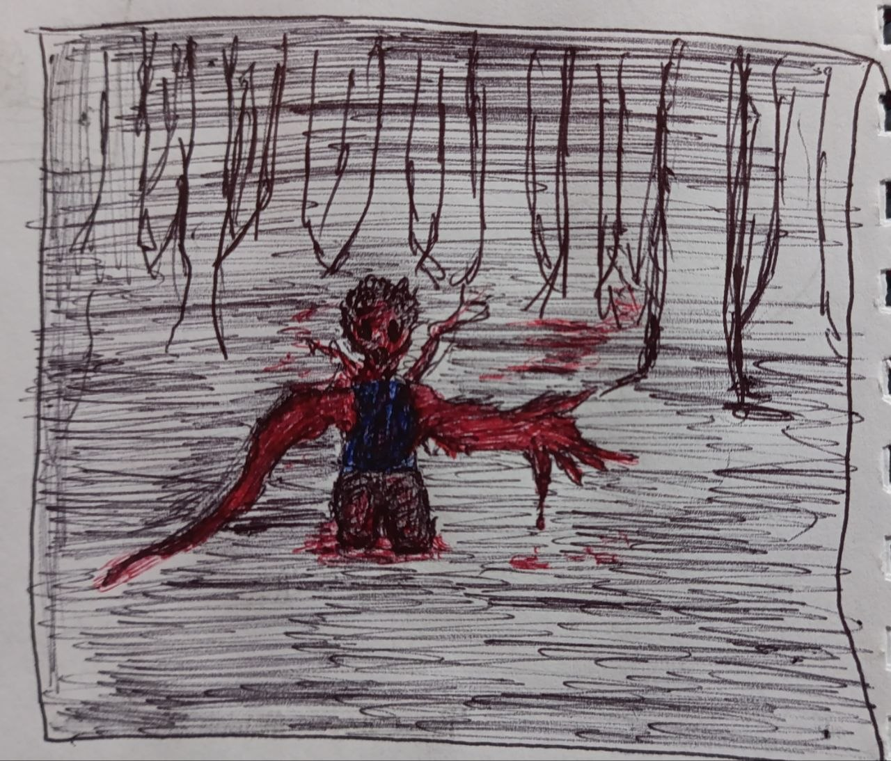
Primer boceto del hombre rojo
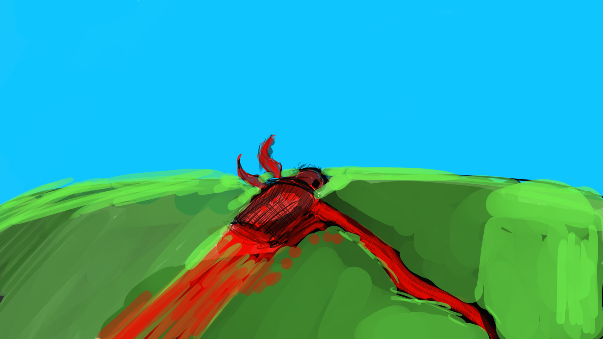
2do boceto del hombre rojo
Animación en After Effects (Hombre Rojo muerto)
03
Resolución y resultados finales
Tormenta de Nieve (Final)
Esta animación de la tormenta fue animada en After Effects, editada en Vegas Pro, con
efectos de luces y de sonido ambiental. Hay un pequeño cambio de velocidad
en la caída de las partículas una vez que cae el segundo rayo, el más lejano.
Agujero Negro
Esta animación del agujero negro fue hecha en After Effects, con el paquete de efectos 'Pilot'.
Antes se tenía pensado añadir un efecto de sonido, sin embargo se descartó porque es en el
espacio y es más aterrador una amenaza natural silenciosa como lo es un verdadero
agujero negro.
Ciudad Destruida (Final)
Exporté por capas la composición realizada en Photoshop de la pieza gráfica, luego
hice la animación en Vegas Pro para hacer un sutíl movimiento de la
neblina roja del fondo, luego añadí luces y "proyectiles" que se noten entre
los edificios, como si se estuviesn disparando en medio de los mismos. Se añadió
efectos de sonido de disparos y de una alarma nuclear.
El hombre rojo (Final)
Como mencioné anteriormente, hice una animación de esta criatura
en After Effects, ya que separé por capas los tentáculos de su espalda
y también su cabeza; para que saliera de su cuerpo y se mueva mientras gruñe
y gime. Los sonidos de la criatura están actuados por mí, desde los gruñidos
hasta el grito agónico. Usé Vegas Pro para recortar la longitud
de la animación original, luego añadí los efectos de sonido, alargados
artificialmente para un mejor timing en la escena.
Mas de este proyecto
Si quieres saber más de este proyecto grupal, haz click en el link de Drive
que está todo el registro del proyecto, puedes ver la participación de mis compañero
y la mía incluída en este trabajo. También si gustas, descárgate el guión que hicimos
de nuestra interpretación de la obra para adaptarla a TouchDesigner.